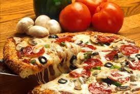
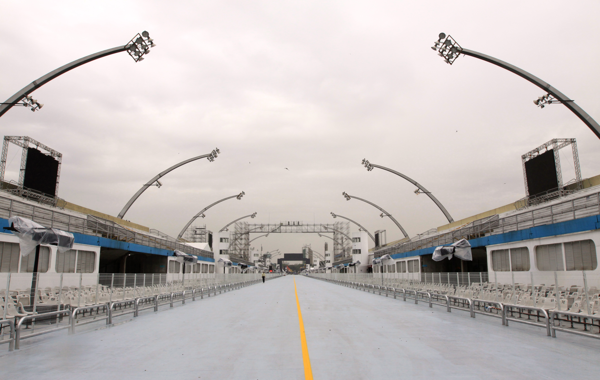

São Paulo é uma das 27 unidades federativas de Brazil, está localizada na Região Sudeste, segundo o IBGE, em 2015, São Paulo teve a maior PIB entre todos os estados brasileiros. O PIB de São Paulo equivale à soma das economias da Argentina, Uruguai, Paraguai e Bolívia. Se fosse um país soberano, seu PIB nominal pode estar entre os 20 maiores do mundo (2010 estimativa)
Curiosidades
.jpg)
Casa do Porko
Moderno e imponente, o Allianz Parque é a principal arena multiuso da América Latina. Localizada no coração de São Paulo, no mesmo terreno que por mais de 100 anos abrigou o Parque Antarctica e, posteriormente, o Estádio Palestra Itália, a casa do Palmeiras foi reaberta em 2014 como marco do centenário do clube e hoje é um dos grandes orgulhos da torcida alviverde.

Pizza
A cidade de São Paulo é a segunda cidade que mais consome pizza no mundo, atrás apenas de Nova York, não há nada mais paulistano do que pedir uma pizza. A preferência dos paulistanos se reflete nos números. Das 30.000 pizzarias do Brasil, 5.500 estão na cidade de São Paulo, segundo a Associação das Pizzarias Unidas.

Sambódromo de São Paulo
O Carnaval de São Paulo diz respeito a uma festa momo realizada na cidade de São Paulo, no estado brasileiro homônimo. Consiste no desfile das escolas de samba no Sambódromo do Anhembi, bailes em clubes e blocos de rua. Atualmente, é considerado um dos maiores e mais importantes eventos populares do Brasil.